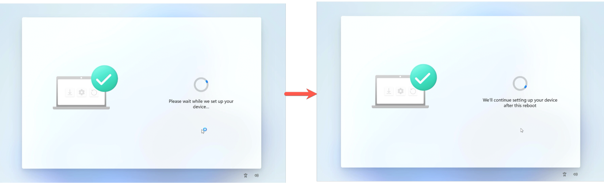

New Windows PC Setup
- When you open and power on your PC, you will be greeted by Windows Setup
- Choose your Country/Region and Keyboard options
- Next, connect to your WiFi network
- Enter your Zillowgroup.com email address, then click Next
- Follow the prompts to log in with your Okta credentials
- If you have not set up Multifactor Authentication, you will be prompted to set up MFA. Follow the prompts provided. Okta Verify is the preferred method
- Your PC will perform some background setup and will reboot before continuing setup

- Your PC will be configured with the necessary applications and settings. This step may take 15-20 minutes, depending on your internet connection.
- Once setup has finished, connect to the VPN to log in for the first time by clicking the icon with the Lock and Key

- Select one of the "New Password/Device ONLY" locations closest to you -> Click Connect -> Enter your Okta Credentials to log in. After connecting, you can sign in to Windows with your Username and Password
- Sign in to Company Portal: After logging in to Windows, launch the Company Portal app by clicking Start -> Type in "Company Portal" -> Click the Company Portal app
- If the Company Portal is not installed, you can open the Microsoft Store and install it from there
- You'll be prompted to sign in... Enter your Okta email address and click Next, then follow the prompts to sign in to Okta
- Make sure the box to “Allow my organization to manage my device” is checked, click OK, and then finally click Done
Congratulations!
Your device is now set up and ready to use
You can find additional applications by launching Company Portal
If you need assistance or resources, you can visit the IT section of Zallway
For existing employees setting up a replacement device, here are resources for backing up and returning your old device:
Zallway - Set up a New Windows Device